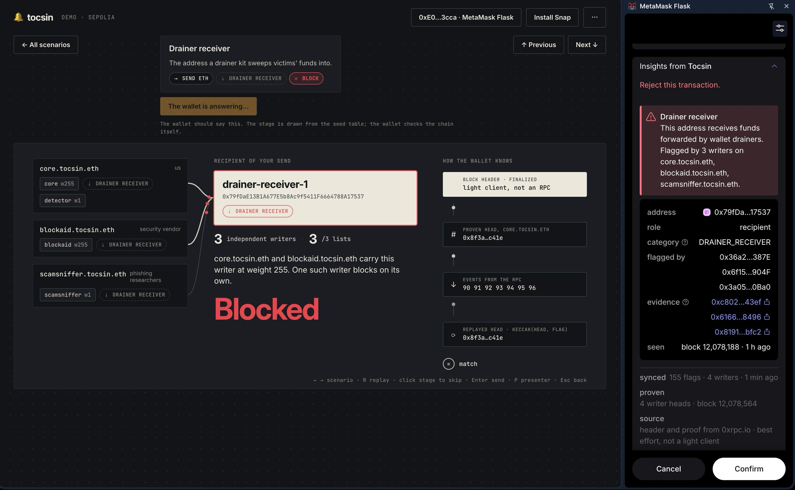
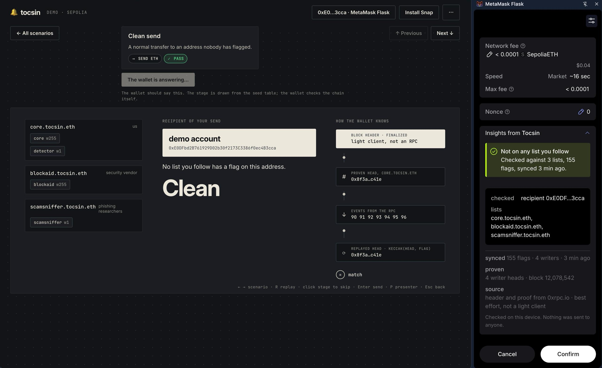

tocsin01 / 06 · MetaMask Snap · Sepolia
tocsin01 / 06 · MetaMask Snap · SepoliaScam warnings.
Before you
sign.
An onchain report registry, trust lists you choose, and a warning inside your wallet.

Sepolia demo · example publisher names · RPC-supplied headerstocsin.eth
tocsin01 / 06 · MetaMask Snap · SepoliaAn onchain report registry, trust lists you choose, and a warning inside your wallet.
tocsin02 / 06 · two recipients, two resultsThe Snap checks the recipient against your synced reports. It shows a warning when your chosen sources flag an address.
 tocsin03 / 06 · inspect the report
tocsin03 / 06 · inspect the reportWriter addresses identify the sources behind the warning.
A specific address, its role in this transaction, and a threat category.
Transaction links let you investigate the report yourself.
The block number records when the activity was observed.
tocsin04 / 06 · Kohaku · warning policyTheft proceeds trigger a warning in this send policy. Kohaku shows the category and evidence, then leaves the decision with you.
 tocsin05 / 06 · the demo and the wallet
tocsin05 / 06 · the demo and the walletChoose a scenario in the demo. Compare its explanation with the actual response inside MetaMask.


The same lists return no matching flag for the demo account.
tocsin-eth.vercel.app/demo
tocsin06 / 06 · Kohaku · swap recipientThe transaction calls a router. Tocsin checks the recipient inside the swap and finds a reported drainer receiver.
Kohaku shows the evidence and disables signing for this blocked transaction.